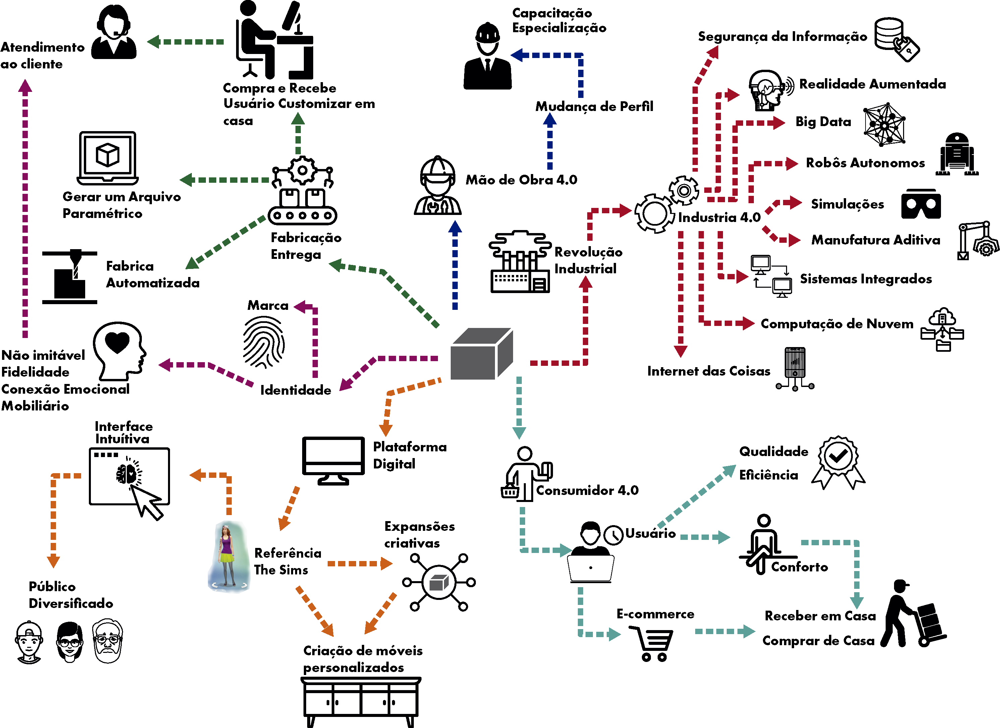
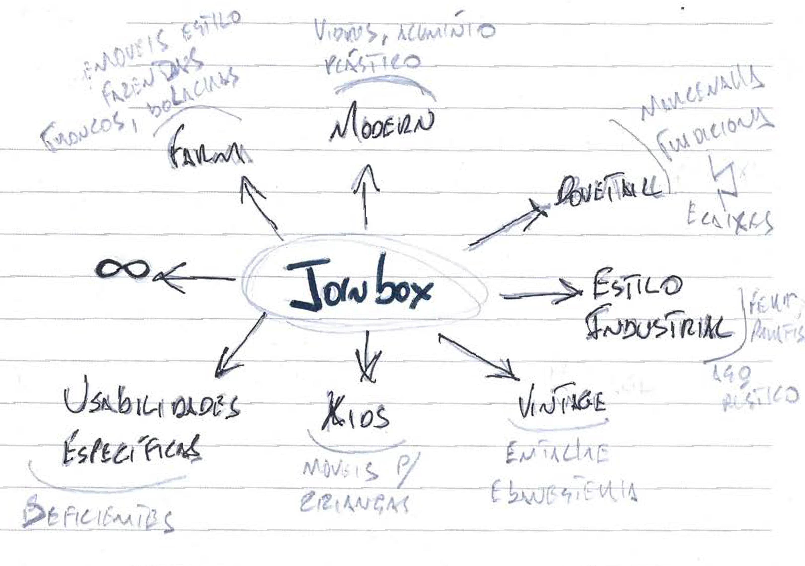
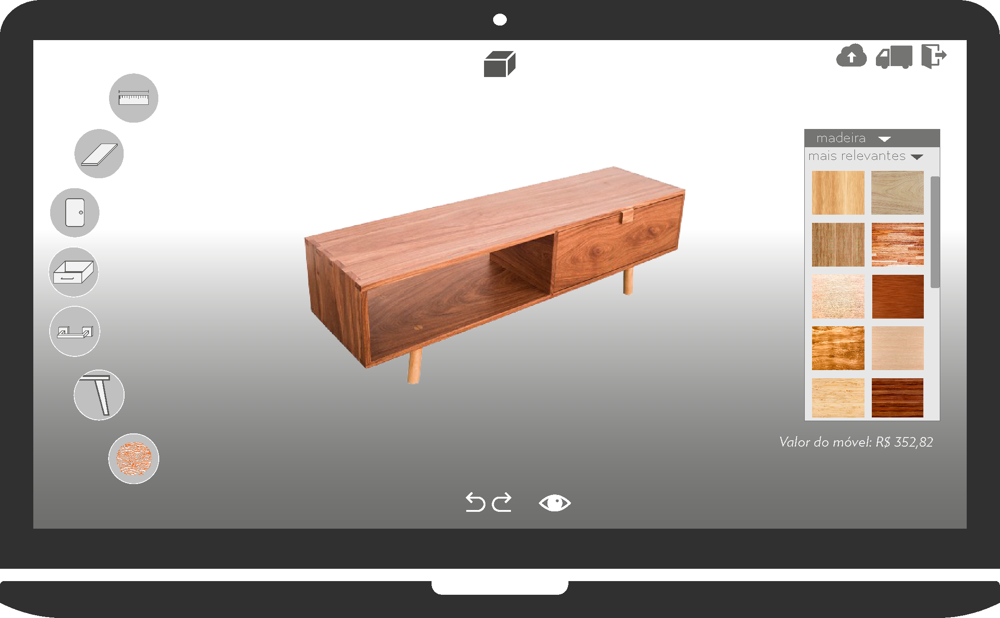
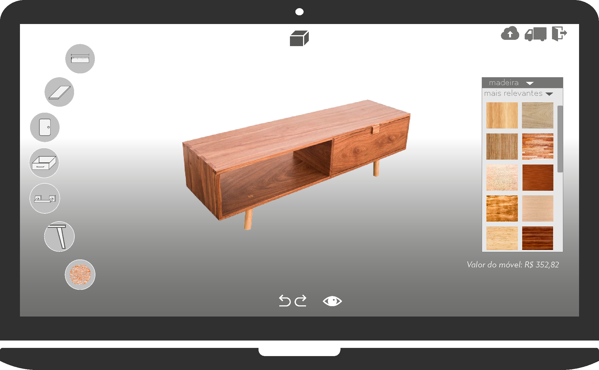

O Joinbox é uma plataforma web, para criação e personalização de móveis, que faz forte referência ao jogo The Sims. Busca no conceito de gamificação tipos de interação e usabilidade necessárias para capturar a atenção do usuário.
O projeto é dividido em duas fases de negócio, seguindo o conceito de empresa lean. Numa primeira fase seria apenas a aplicação voltado para o usuário leigo e para o técnico especialista (marceneiros, designers, arquitetos e afins), com intuito de agilizar e facilitar a comunicação do profissional com o cliente, na criação de projetos.
Numa segunda fase a aplicação estaria conectada à uma célula da indústria 4.0, inserida em uma fábrica moveleira, fazendo a conexão direta com o cliente, sem o intermédio do profissional técnico.
Afim de pensar na estrutura do negócio como um todo, elaborei um mindmap, mais detalhado, envolvendo questões de consumidor, tecnologia, mão de obra, fabricação, identidade e plataforma.
A referência do Joinbox é o jogo The Sims, tanto vinculado à usabilidade - sessão de customização do avatar - quanto à estrutura de expansões. Há a possibilidades de trabalhar com estilos diferentes para a mesma plataforma.
 
